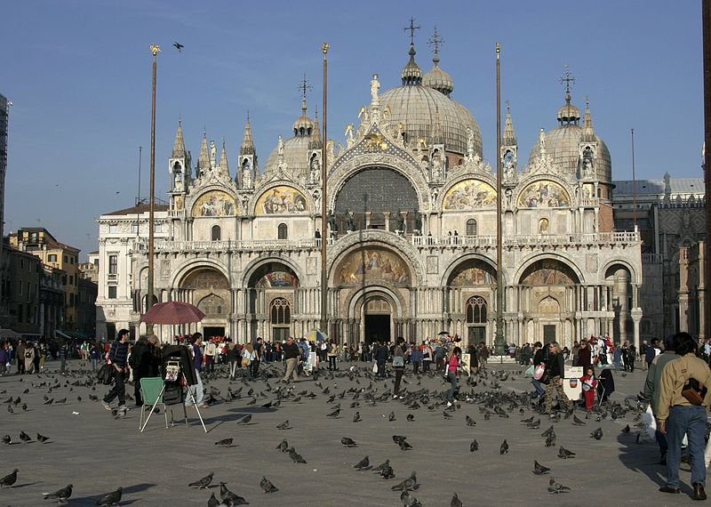
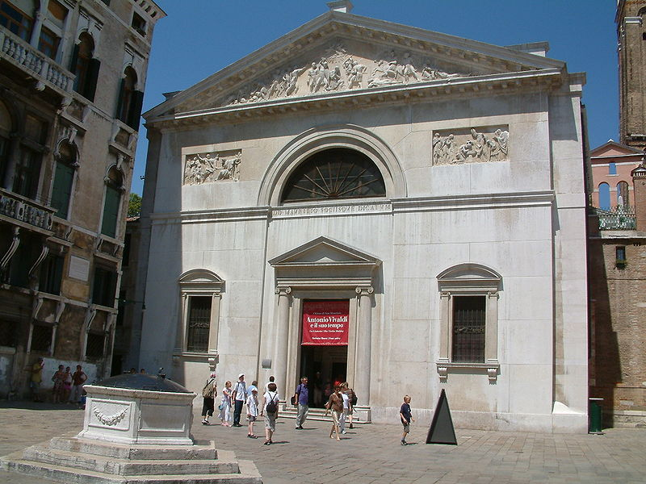

Eglise saint-Luc Evangéliste
Eglise Saint-Beneto

Eglise Saint-Moïse
Basilique Saint-Marc
Eglise Saint-Basso
Eglise Saint-Geminiano
Oratoire Saint-Gall
Eglise Sainte-Marie-du-Lys
Basilique Saint-Georges-Majeur
Eglise Saint-Fantin
Eglise Sainte-Croix-des-Arméniens

Eglise Saint-Sauveur
Eglise Saint-Bartholomée

Eglise Saint-Zulian
Eglise Saint-Stéphane

Eglise Saint-Vidal
Eglise Saint-Samuel
Eglise Saint-Maurice
Eglise Saint-Michel-Archange
Oratoire Saint-Ange des Boiteux
Pour retourner à la page d'accueil : Ctrl+ Entrée
Voir la liste complète sur Wikipédia